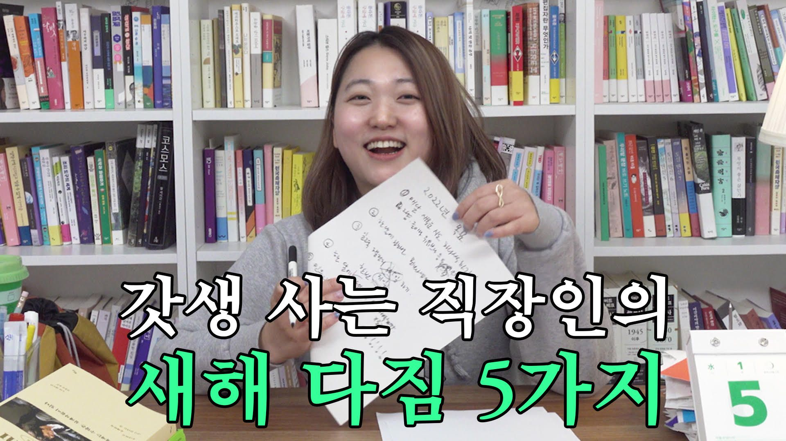

헤이조이스 블로그
회사는 재미없어도 돼. 내가 재밌으니까!
헤이조이스2022년 4월 12일 11:19
조아란 님
민음사 콘텐츠 기획 총괄
Q. 최근 민음사 마케팅팀 ‘부장님’이 되셨죠. 소감 한 말씀 부탁드려요. (웃음)
사실 기분이 썩 좋지는 않았어요. (웃음) 다른 게 아니라, 나이에 비해서 부장 타이틀을 빨리 단 편이다 보니 직책 자체가 무겁게 다가오더라고요. 회사에서 ‘고인물'이 되는 것에 대한 반감도 있었고 제가 하는 일 자체보다 직책으로 평가받으면 어쩌지 하는 두려움도 있었고요.
하지만 한편으로는 ‘여성 직장인'인 제가 한 회사에서 차장이 되고, 부장이 되어가는 모습을 미디어를 통해 많이 노출시키는 게 어떤 분들에게는 긍정적인 동기부여가 될 수 있겠다는 생각도 해요. 저를 통해 다른 여성들이 ‘나도 할 수 있겠다'라는 에너지를 얻을 수 있다면 이것도 나쁘지 않겠다 싶은 거죠. 요즘은 기왕 이렇게 된 거 좋은 영향력을 미치는 사람이 되어야지 생각하고 있어요.
Q. 조금 민감한 질문인데, 이직을 생각하신 적은 없었나요?
이직 생각 왜 없었겠나요. (웃음) 더 큰 시장에 나가서 마케팅을 해보고 싶기도 하고 안 가본 길을 가보고 싶기도 했죠. 위에서 말씀드린 것처럼 13년 동안 한 회사에 있으면서 ‘고인물'이 될까봐 두렵기도 했고요. 하지만 절박하게 이곳을 떠나야 할 이유를 아직 못 찾았어요. 해볼 수 있는 일을 다 해보고 홀가분하게 떠나고 싶은데 그러기엔 아직 한참 멀었고요.
저와 같은 고민을 하고 계신 분들이 헤이조이스에도 많을 거라 생각해요. 그 분들에게 지금 몸담고 있는 회사를 떠나야 할 뾰족한 이유가 없다면, 스스로 업무를 확장하며 일의 동력을 찾아보면 어떨까 제안하고 싶어요. 방법을 모르겠다면 이번 강연을 통해 소소하게나마 ‘How’에 대한 힌트를 얻어가셨으면 좋겠어요.